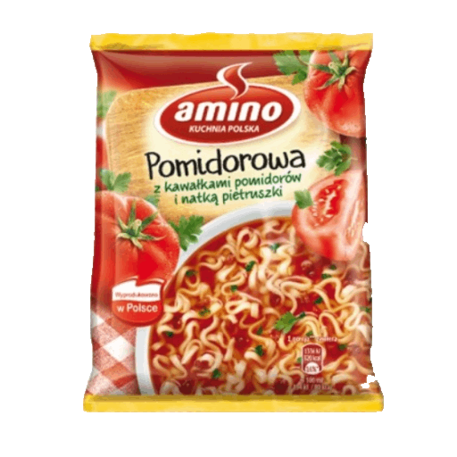
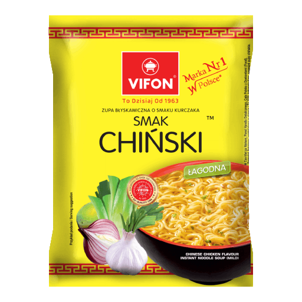
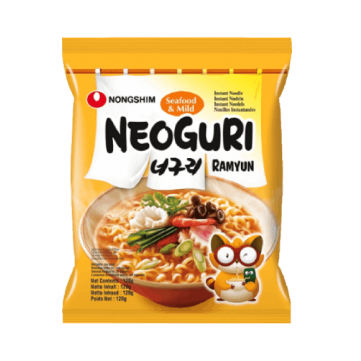

Zupka Pomidorowa Amino
Zupka pomidorowa Amino to łatwe i szybkie rozwiązanie dla miłośników tradycyjnych Polskich dań.
Zawiera
naturalne składniki i
przyprawy, co sprawia, że jest to idealna propozycja dla osób, które nie mają czasu na gotowanie.
Recenzje klientów są zwykle pozytywne, a zupka ta jest uważana za smaczną i sycącą. Jednakże, niektórzy klienci skarżą się na zawartość soli i glutaminianu sodu w produkcie, a także na małą ilość kawałków pomidorów. Mimo kilku negatywnych opinii, większość klientów uważa ją za pyszną i godną polecenia.
Recenzje klientów są zwykle pozytywne, a zupka ta jest uważana za smaczną i sycącą. Jednakże, niektórzy klienci skarżą się na zawartość soli i glutaminianu sodu w produkcie, a także na małą ilość kawałków pomidorów. Mimo kilku negatywnych opinii, większość klientów uważa ją za pyszną i godną polecenia.

Zupka Chińska Vifon
Zupka Vifon o smaku tradycyjnym chińskim jest jedną z najlepszych zupek instant o tym smaku, jakie
miałem okazję
próbować. Autentyczny smak i aromat przypraw, takich jak cynamon, kardamon czy imbir, idealnie
wkomponowuje się w
delikatny smak makaronu ryżowego. Zupka nie jest zbyt słona ani ostro-pikantna, a jednocześnie
doskonale zaspokaja głód
i łagodzi ochotę na coś smacznego.
Chociaż zupka jest jednocześnie łatwa i szybka w przygotowaniu, smakuje jak prawdziwe danie kuchni chińskiej, co czyni ją idealnym rozwiązaniem dla osób, które chcą się zanurzyć w orientalnych smakach w szybki i łatwy sposób.
Chociaż zupka jest jednocześnie łatwa i szybka w przygotowaniu, smakuje jak prawdziwe danie kuchni chińskiej, co czyni ją idealnym rozwiązaniem dla osób, które chcą się zanurzyć w orientalnych smakach w szybki i łatwy sposób.

Zupka neoguri seafood & mild
Zupka Neoguri Seafood & Mild to autentyczna azjatycka propozycja o wyjątkowym morskim smaku. Kawałki
morskich owoców
dodające wyjątkowego charakteru zupce pochodzą z najwyższej jakości składników, co sprawia, że smak
jest autentyczny i
wyjątkowy.
Dzięki delikatnej przyprawie, zupka zachowuje swój unikalny smak i aromat. Z pewnością przypadnie do gustu miłośnikom azjatyckiej kuchni oraz smakoszom morskich specjałów.
Dzięki delikatnej przyprawie, zupka zachowuje swój unikalny smak i aromat. Z pewnością przypadnie do gustu miłośnikom azjatyckiej kuchni oraz smakoszom morskich specjałów.